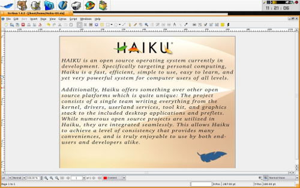

Dank der Bemühungen von Giovanni Mugnai ist Scribus ab Version 1.4.3 auch für Haiku erhältlich.
Um Scribus unter Haiku zu verwenden, müssen Sie Scribus für Haiku zunächst herunterladen. Bei Scribus für Haiku handelt es sich um ein ZIP-Archiv. Entpacken Sie dieses in ein Verzeichnis Ihrer Wahl, z.B. den Haiku-Desktop. Dort finden Sie anschließend die Datei Scribus1.4.3_Haiku.pkg. Ein Doppelklick startet das Installationsprogramm. Letzteres enthält alle Abhängigkeiten, so daß Sie beispielsweise Qt nicht gesondert installieren müssen. Darüber hinaus enthält es aktuelle Versionen von Ghostscript, die Ghostscript-Fonts, littleCMS und Hunspell.
Nach dem Entpacken sehen Sie ein Scribus-Icon auf Ihrem Desktop, mit dem Sie Scribus starten können.
|  |